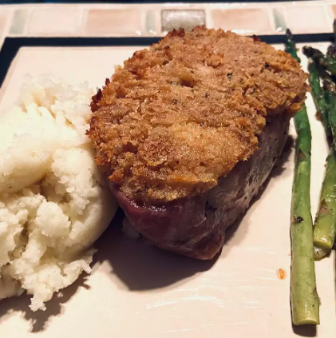

Horseradish Pork Chops

Pork chops with a creamy horseradish topping.
Delicious and easy but not low fat. We always serve with wild rice and
green beans on the side.
Ingredients
- 4 boneless porkchops
- 1/4 cup melted butter
- 1/4 cup dry bread crumbs
- 1/4 cup prepared horseradish
Steps
- Preheat oven to 350 degrees F
- Grease 9x13 baking Dish
- Place pork chops into prepared baking dish. Mix together other
Ingredients. Press mixture onto earch chop.
- Bake in preheated oven for 45 minutes